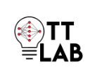

Microsoft and National Geographic
AI for Earth Innovation Grant
Farming Adaptation and Artificial Intelligence for Resilience
Project Overview
Leveraging AI and drone technology to address critical agricultural challenges in Caribbean Small Island Developing States

About FAAIR
The Farming Adaptation and Artificial Intelligence for Resilience (FAAIR) project leverages AI and drone technology to address critical agricultural challenges in Caribbean Small Island Developing States. Using machine learning models including XG-Boost, CNNs, and Support Vector Machines, we've developed innovative solutions for weed detection and water stress identification in tropical crops. Our work combines precision agriculture with climate adaptation strategies, providing small-holder farmers with accessible, AI-powered tools to improve crop yield and resilience in the face of climate change.
The F.A.A.I.R. Project
Main project presentation and findings
Semantic Detection Methods
A semantic approach to weed and water stress detection using drone video
Soil Composition
How Trinidad's soil survey data — 14,341 polygons digitised from the 1971 UWI Land Capability Study — shaped FAAIR's crop selection strategy and water-stress detection thresholds
Loam
The soil survey divides Trinidad into three broad zones, each with distinct drainage characteristics, parent lithology, and suitability for smallholder crops. FAAIR field sites were deliberately selected to span at least two of these zones, allowing the machine-learning models to be trained on spectral signatures arising from different soil backgrounds — a critical step for building models that generalise beyond a single farm.
| Zone | Drainage Class | Dominant Texture | Parent Rock | Crops Supported | FAAIR Relevance |
|---|---|---|---|---|---|
| Upland | Well-drained | Clay loam / Sandy loam | Sandstone, metamorphic | Cocoa, coffee, dasheen, short-season vegetables | Primary zone for weed and water-stress detection trials |
| Terraced | Moderately well-drained | Clay / Silty clay loam | Limestone, marine deposits | Citrus, pineapple, root crops | Secondary zone; steeper slope class tested UAV stability |
| Alluvial Plains & Valley | Poorly to imperfectly drained | Heavy clay (Nariva / Caroni) | Alluvium, marine clay | Rice, sugar cane, taro | Drainage-related false positives studied in NDWI analysis |
Drainage class directly influences how quickly precipitation infiltrates the root zone, which in turn determines how soon a crop transitions from adequate water supply into stress. Erodability — the susceptibility of a soil surface to runoff-driven particle detachment — affects slope wash and downstream sedimentation, both of which can degrade canopy reflectance signals captured by the drone's multispectral sensor.
Poorly-Drained Alluvial Clays
Soils such as Nariva Clay and Caroni Clay retain water for extended periods. These polygons produced persistently high NDWI values even during the dry season, requiring zone-specific calibration thresholds so the water-stress classifier would not misinterpret waterlogging as adequate hydration — a distinct physiological condition from genuine soil water depletion.
Well-Drained Upland Soils
Upland clay loams — such as Maracas Clay Loam and Palo Seco Clay — drain rapidly following rainfall, causing available soil water to fall below the critical depletion fraction within days. This faster cycling made upland plots the most responsive to the model's water-stress detection, and the best candidates for early-warning UAV monitoring.
Slope & Erodability Interaction
High primary erodability scores (fields pri_erosio) co-occurred with slopes above Class C (>15°) in the Northern Range foothills. Under heavy rainfall events, surface wash generated spectral noise in drone imagery. Flights were accordingly scheduled outside the first 48 hours following heavy rain to allow soil surfaces to stabilise.
Lithology & Reflectance Baseline
Sandy soils derived from sandstone parent rock displayed markedly higher bare-soil reflectance in the near-infrared band compared to dark metamorphic-derived clays. This lithology-driven baseline shift was accounted for by normalising vegetation indices to soil-adjusted variants (SAVI) within each polygon's dominant lithology class.
To give the AI model a physically grounded target, FAAIR used a crop evapotranspiration and soil water balance approach to calculate, for each soil type, the threshold at which available water in the root zone drops low enough to restrict crop evapotranspiration — the point of measurable water stress. This threshold was then cross-referenced with spectral index values observed at drone survey time to validate that changes in NDWI, NDVI and NDRE corresponded to known physiological stress events.
ETc adj = Ks × Kc × ET0
Dr,i = Dr,i-1 − (Pi − ROi) − Ii + ETc,i + DPi
Ks = (TAW − Dr) / ((1 − p) × TAW)
TAW by Soil Texture
Total Available Water was estimated from field capacity (θFC) and wilting point (θWP) values assigned per soil type in the survey. Clay-loam upland soils yielded TAW values of approximately 150–180 mm/m, whereas sandy loams in terraced zones yielded 90–120 mm/m — meaning sandy plots reached the stress threshold roughly 30–40% faster under equivalent atmospheric demand.
Crop Coefficients (Kc)
Kc values were assigned for the primary monitored crops: pepper and bodi (cowpea). Mid-season Kc values of 1.05 (pepper) and 1.15 (cowpea) were used for the main canopy-development stage captured during drone surveys, adjusted downward for end-of-season senescence to prevent false positive stress flags from normal crop maturation.
Stress Coefficient Ks → Spectral Signal
When Ks fell below 1.0 (i.e., Dr exceeded p × TAW), ground-truth measurements confirmed declining NDWI and a characteristic red-edge shift detectable in NDRE imagery. This provided the labelled ground-truth signal used to train the CNN and SVM classifiers, directly linking the soil water balance to drone-observable spectral features.
Depletion Monitoring & Survey Timing
Daily Dr was tracked throughout each experimental season using on-site rain gauges and CHIRPS rainfall estimates. UAV surveys were timed to coincide with three soil-water states: well-watered (Dr < 25% TAW), approaching stress (Dr = 40–55% TAW), and confirmed stress (Dr > 60% TAW), creating a stratified spectral dataset across all water-availability conditions.
Microclimate
How Trinidad's rainfall patterns, humidity regimes, and local atmospheric conditions shaped the FAAIR sensing strategy and influenced water-stress detection outcomes
Trinidad lies approximately 11°N of the equator, placing it just outside the main hurricane belt but firmly within the Inter-Tropical Convergence Zone (ITCZ) influence. This produces a strongly bimodal rainfall regime: a main wet season from June through December, a short dry season from January through May, and a brief mid-summer dry spell ("Petit Carême") in late September–October. Understanding this seasonality was foundational to FAAIR's monitoring calendar — water-stress events are most likely to occur and most impactful to yield during the dry season and the Petit Carême window.
Humidity & Atmospheric Demand
High relative humidity (85–95% in the morning, falling to 65–75% by mid-afternoon) suppresses vapour pressure deficit, which in turn reduces reference evapotranspiration (ET₀) compared to arid regions. This means the daily depletion rate of soil water is lower, and the crop can tolerate slightly longer intervals between irrigation. However, the combination of high humidity and warmth also promotes fungal pathogens, making crop health monitoring — not just water stress — a priority use case for FAAIR's drone surveys.
Dry Season Stress Windows
January through May represents the critical monitoring window. During pronounced dry seasons — particularly in El Niño years, when the ITCZ retreats further south — monthly rainfall can fall below 50 mm for two or three consecutive months across the central plains. FAAIR surveys were concentrated in this period to capture the full spectrum from early stress (yellowing, reduced NDRE) through to severe depletion (wilting, marked NDWI decline), building the most informative portion of the training dataset.
Microclimate does not just determine when stress occurs — it directly affects the quality and interpretability of the spectral signal the drone captures. Several climate-driven sources of error had to be identified and mitigated before reliable machine-learning inference was possible.
Atmospheric Haze & Path Radiance
High humidity increases aerosol scattering, which adds a wavelength-dependent haze component to the sensor's incoming radiance. This path radiance artificially elevates near-infrared reflectance and depresses red-band values, mimicking a healthier-canopy signature. Empirical line calibration using ground-based reflectance targets was performed at each flight to remove this offset before computing vegetation indices.
Thermal Stratification & Heat Shimmer
On clear dry-season afternoons, strong surface heating over bare-soil patches creates convective cells that cause image blur ("heat shimmer") in low-altitude passes below 30 m AGL. Flights were therefore planned for the 07:00–10:00 window when boundary layer mixing is minimal, surface temperatures are within 2–4°C of air temperature, and atmospheric stability produces the sharpest imagery for per-pixel classification.
Canopy Temperature as a Proxy
Stressed plants close their stomata to conserve water, reducing transpirational cooling and causing canopy temperature to rise above air temperature. The thermal infrared band on the drone sensor was calibrated against air temperature logged by on-site weather stations during each flight. A canopy-to-air temperature differential (ΔT) exceeding +2°C provided a secondary, physics-based validation layer for the water-stress labels assigned by the spectral model.
Cloud-Shadow Contamination
Cumulus clouds are common over Trinidad even in the dry season, particularly after 10:00 local time as surface heating drives convective development. Shadow passages during a drone survey produced abrupt, scan-line-level drops in all spectral bands — most severe in the visible and SWIR channels — that could be misclassified as dense canopy or stressed areas. A cloud-shadow mask was computed from co-registered RGB orthomosaics and applied prior to index calculation.
Translating scientific ambition into reliable field data required a detailed flight protocol calibrated to Trinidad's microclimate. The following operational thresholds were developed over multiple field seasons and codified into the FAAIR flight checklist, ensuring that each survey collected imagery of sufficient quality to feed the machine-learning pipeline.
Wind Speed < 15 km/h
Trade winds are light and variable in the early morning. Sustained winds below 15 km/h ensure stable hover, consistent overlap between image strips, and accurate georeferencing from the onboard RTK GPS.
Cloud Cover < 30%
Partially cloudy skies are acceptable provided no active cloud shadows cross the survey area during the flight window. A sky-scan check is performed 10 minutes before take-off. Breaks in cover of ≥ 20 minutes are targeted.
Flight Window 07:00–10:00
Solar elevation between 25° and 55° provides adequate illumination while avoiding the specular reflection peak that occurs at high solar angles over wet leaf surfaces. This window also precedes peak convective cloud development.
Post-Rain Delay ≥ 48 h
Soil and leaf surfaces remain wet for 24–48 hours after rainfall, causing elevated near-infrared reflectance that masks stress signals. Surveys conducted within this window require a wet-surface flag and may not be suitable for primary water-stress inference.
Relative Humidity > 90%
Very high humidity increases path radiance correction uncertainty. Surveys in these conditions proceed but require additional reflectance panel captures at the start and end of the mission to bracket atmospheric changes across the flight duration.
Active Precipitation
All flights are suspended during rainfall. In addition to airframe safety, wet optics on the multispectral sensor introduce spectral artefacts that cannot be corrected in post-processing. The mission is rescheduled to the next qualifying morning window.
Wind Gusts > 25 km/h
Gusty conditions cause attitude oscillations that degrade image overlap and introduce motion blur. These conditions are most common in the late dry season when northerly troughs push trade wind surges across the island.
Ground Control Points (GCPs)
A minimum of five GCPs were deployed per study plot, positioned to span the full extent of the survey area. In humid tropical environments, vegetation growth between surveys can shift apparent ground positions; GCPs were re-surveyed with RTK GPS at each campaign to maintain sub-10 cm georeferencing accuracy.
Project Team
Meet the researchers and partners behind FAAIR
Patrick Hosein
Principal Investigator
Department of Computer Science
The University of the West Indies
Omar Mohammed
Project Coordinator
The Cropper Foundation
Mindy Mohammed
Technical Lead
MSc Data Science, UBC
Department of Computer Science
The University of the West Indies
Keanu Nichols
Researcher
Boston University
Roganci Fontelera
Researcher
Department of Computer Science
The University of the West Indies
Jade Chattergoon
Researcher
Department of Computer Science
The University of the West Indies
Aqeel Mohammed
Researcher
Department of Computer Science
The University of the West Indies
Partner Organizations
Collaborating to advance AI for climate-smart agriculture

Project Resources
Learn more about FAAIR and access project information
FAAIR Project Objectives
The FAAIR project aims to revolutionize smallholder agriculture in the Caribbean through advanced AI technology:
- Enable real-time and rapid assessment of smallholder crop and soil health and cover using machine learning models that combine vegetation indices
- Deploy solutions using Unmanned Aerial Vehicles (UAVs) over a variety of landscapes and production systems characteristic of small island states
- Generate comprehensive landscape data, reducing reliance on post-processing expertise and expensive satellite imagery
- Support the adoption of AI for climate-smart agriculture in the Caribbean region
Grant Recognition
The FAAIR project has received prestigious grants from multiple organizations, demonstrating the significance and potential impact of this work:
• National Geographic AI for Earth Innovation Grant
• Microsoft Azure AI for Earth Grant
• NVIDIA Grant Support
Development Lab
Learn more about the Data for Development initiative at The Cropper Foundation, which houses the FAAIR project and other innovative agricultural technology solutions.
Visit Development LabFeatured Article
Read about how a Trinidadian professor and NGO received the National Geographic Society grant to advance artificial intelligence in agriculture and transform farming practices in the Caribbean.
Read ArticleSoil Map Illustrations
Thematic maps derived from Trinidad's 14,341-polygon soil survey, used in FAAIR to contextualise field sites, calibrate spectral models, and explain spatial variation in water-stress detection results